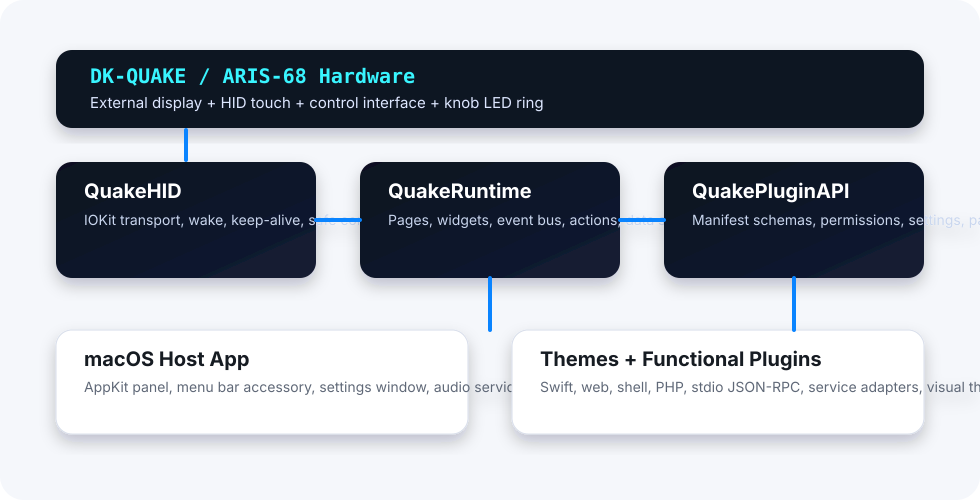

User Manual
Installing, launching, configuring, using, and troubleshooting QuakeKit on macOS with the DK-QUAKE / ARIS-68 touch display and control center.
Table of Contents
1. Read This First
QuakeKit is a Swift-native control center for the DK-QUAKE / ARIS-68 touch display. It is designed to replace the stock DK software over time, while also becoming a modular platform for third-party widgets, applets, themes, and automation surfaces.
AlphaThis build is still for development and testing. It can wake the panel, keep it alive, render the native host, read touch/knob input, run example plugins, and configure themes, but it is not yet a polished end-user replacement package.
SafetyDo not send unknown HID commands to the device. QuakeKit avoids the known DFU command and keeps live probes to safe wake, ping, query, brightness, microphone, and knob-ring operations.
2. Install And Launch
Current Development Launch
From the repository root, build and run the panel host:
cd /Users/jason/Code/QuakeKit
swift build
.build/debug/quake-panelRun the non-hardware release validation sweep before sharing a build:
./scripts/validate-release.shLocal App Bundle Launch
The current repository can assemble a local .app bundle for launch testing:
./scripts/build-app-bundle.sh
open .build/QuakeKit.appThe generated app runs as a menu-bar accessory and includes bundled example plugins and themes in its resources.
GapThe final public release should be a signed and notarized macOS .app bundle. The current bundle script is a local development assembler, not the final installer or release artifact.
Convenience Launchers
./scripts/launch-quakekit.sh
./scripts/QuakeKit.command3. Permissions And Privacy
QuakeKit can run display and HID workflows without microphone access. Microphone access is only needed for voice features, meeting clips, and future AI-agent audio workflows.
| Permission | When Needed | Current Control | Data Location |
|---|---|---|---|
| Microphone | Voice agent, 30-second meeting clip, future transcription workflows. | Menu bar item: Request Microphone Access. | ~/Library/Application Support/QuakeKit/Recordings/ |
| Input Monitoring / Accessibility | Future hotkey and application-companion plugins. | Not yet guided by QuakeKit. | macOS System Settings. |
| Network | Weather, markets, sports, Home Assistant, OctoPrint, UniFi, AI services. | Declared in plugin manifests where applicable. | Plugin-specific. |
| Secrets | API keys and service tokens. | Manifest contract exists; full Keychain UI is a gap. | Future Keychain-backed store. |
4. DK Hardware Behavior
The DK-QUAKE panel appears to macOS as an external display, plus HID interfaces for touch, knob/control input, and vendor commands. QuakeKit renders a borderless AppKit window onto the DK display. It does not push pixels through HID.

QuakeKit treats the panel as a macOS display while using HID for control events, wake, keep-alive, and knob LED presentation.
Display Ownership
- DK-like display sizes are detected at
1920x480or480x1920. - The panel window uses the full display frame instead of the reduced macOS visible frame.
- The app hides Dock/menu bar presentation while owning the DK panel.
- A pointer guard moves the mouse cursor back to the primary display if it crosses onto the DK panel.
Hardware Probe Commands
swift run quake-probe
swift run quake-probe --all-hid
swift run quake-probe --self-test
swift run quake-probe --listen --wake
swift run quake-probe --led-on
swift run quake-probe --led-off
swift run quake-probe --led-test
swift run quake-probe --brightness 2556. Settings Window
Open the primary settings window from the QuakeKit menu-bar icon: Open Settings.... This window appears on the primary Mac display and is designed for keyboard and mouse use.
| Section | Current Controls |
|---|---|
| Global | Default panel page, launch mode summary, display ownership summary, package directory. |
| Themes | Active theme, theme options, reset overrides, remove installed themes. |
| Widgets & Apps | Installed/bundled plugin views and their layout/presentation hints. |
| Carousel | Enable rotation, choose duration, include/exclude widget views. |
| Plugins | Plugin settings, reset plugin settings, remove installed plugin packages. |
| About | Loaded plugin/theme counts and reload notes. |
Current settings files live in:
~/Library/Application Support/QuakeKit/settings.json
~/Library/Application Support/QuakeKit/theme-config.json7. Themes
The bundled themes are Cyberpunk Neon, Focus Dark, and Weather Glass. Themes define color tokens, typography, component styles, layout defaults, assets, configurable visual options, and knob-ring presentation.
Theme packages use this layout:
SomeTheme.quakekittheme/
theme.json
assets/Validate or install a theme from the command line:
swift run quake-probe --validate-theme Examples/Themes/focus-dark.quakekittheme/theme.json
swift run quake-probe --install-package ./SomeTheme.quakekittheme
swift run quake-probe --install-package ./SomeTheme.quakekittheme.tar.gz8. Widgets And Apps
QuakeKit ships a broad set of example plugins so users and developers can test the platform shape. Current examples include Weather, System Monitor, Markets, Sports, Home Assistant, OBS, Spotify, YouTube, Discord, OctoPrint, Security Cameras, Timers, Meeting Notes, hotkey grids, terminal companions, and AI-agent harnesses.
| Category | Examples | Status |
|---|---|---|
| System | System Monitor, Agenda, Timers, Clipboard Notes | Runnable fixtures and native/data-driven displays. |
| Information | Weather, Markets, Sports | Keyless public-data adapters with deterministic fallbacks. |
| Media | Spotify, YouTube, Music Now Playing | Local-control fixtures and metadata surfaces. |
| Automation | Home Assistant, OctoPrint, UniFi, OBS, Security Cameras | Offline-safe stubs with settings and action surfaces. |
| AI / Voice | Voice AI Agent, Meeting Notes, ChatGPT, Claude, Gemini, Grok, DeepSeek, Cursor | Harness scaffolds; vendor terms and API choices remain release concerns. |
9. Carousel
The carousel automatically rotates selected widget-capable views on the DK panel. In the settings window, use Carousel to enable it, choose a duration, and include or exclude individual widgets.
- Durations: 5, 10, 15, 30, or 60 seconds.
- If no explicit widget list is saved, all eligible widgets are included.
- Carousel is best for passive dashboards such as Weather, System Monitor, Agenda, Markets, and Sports.
10. Installing Packages
QuakeKit can install unpacked package directories or tar bundles. Use the settings window buttons Install Plugin... and Install Theme..., or install through the CLI:
swift run quake-probe --install-package ./SomePlugin.quakekitplugin
swift run quake-probe --install-package ./SomeTheme.quakekittheme
swift run quake-probe --install-package ./SomePlugin.quakekitplugin.tar.gz
swift run quake-probe --install-package ./SomePlugin.tgzInstalled packages are copied into:
~/Library/Application Support/QuakeKit/Plugins/
~/Library/Application Support/QuakeKit/Themes/AlphaPackage install/remove currently requires restarting QuakeKit before package discovery refreshes.
11. Troubleshooting
| Problem | Check | Command |
|---|---|---|
| Panel stays dark | Confirm wake and keep-alive pongs. | swift run quake-probe --wake --listen |
| No touch or knob input | Confirm HID interfaces and permissions. | swift run quake-probe --all-hid |
| Plugin does not appear | Validate manifest and restart after install. | swift run quake-probe --validate-plugin path/to/manifest.json |
| Theme does not appear | Validate theme manifest and package suffix. | swift run quake-probe --validate-theme path/to/theme.json |
| Release confidence needed | Run full non-hardware validation. | ./scripts/validate-release.sh |
12. Current Gaps
- Final signed, notarized macOS release packaging is not complete.
- Plugin permission prompts and secret storage are declarative but not complete user-facing flows.
- Some web/native/plugin transport surfaces are documented as platform contracts before full host execution support exists.
- Installed package reload requires restart.
- Third-party integrations need service-specific setup guides before v1.0.
Index
- app bundle, section 2
- carousel, section 9
- DK display, section 4
- menu bar accessory, sections 2 and 6
- microphone, section 3
- package install, section 10
- settings window, section 6
- themes, section 7
- troubleshooting, section 11
- widgets, section 8